Generated by ChatGPT on 2025-12-11
逐字稿下載：ChatGPT_zh_L04_第_4_講_Holonomic_Quantum_Computation主題_4.txt
完整音檔：
Segment 1:
Segment 2:
Segment 3:
Segment 4:
Segment 5:
Segment 6:
Segment 7:
Segment 8:
Segment 9:
Segment 10:
Segment 11:
Segment 12:
Segment 13:
本講聚焦在 Holonomic Quantum Computation (HQC) 的「核心操作層級」：如何在退化能階流形上，透過 非阿貝爾 Berry phase（Wilczek–Zee 幾何相） 實現 通用量子邏輯閘。我們將從數學結構出發，建立 Hilbert 空間上纖維束的觀點，進而推導非阿貝爾 Berry 聯絡、曲率與 holonomy 的顯式形式，最後給出具體的 Holonomic 單量子位與雙量子位閘設計範例。
考慮含有參數 \( \lambda \in \mathcal{M} \) 的哈密頓量族 \( H(\lambda) \)，\(\mathcal{M}\) 是參數流形（例如某些控制場強度、相位空間）。若參數 \(\lambda(t)\) 沿著封閉路徑 \(C\subset \mathcal{M}\) 緩慢（絕熱）演化，系統狀態（假設停留在某個能階空間）在演化完一圈後，除了動力相（dynamical phase）之外還會獲得幾何相。
在 Holonomic Quantum Computation 中，我們關心的不是單一能階，而是多重退化子空間，這時候幾何相不再是純量，而會變成一個 矩陣，形成非阿貝爾 gauge 結構，這就是 Wilczek–Zee 的非阿貝爾 Berry phase。
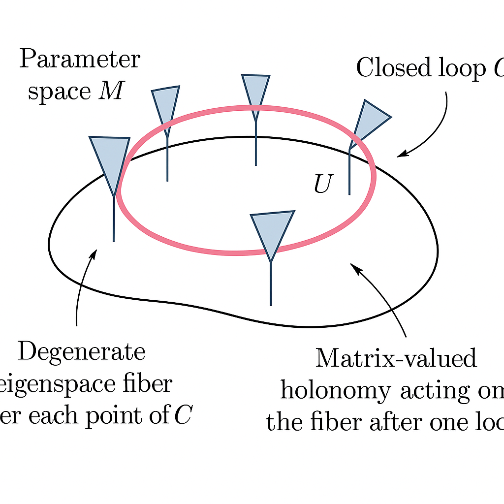
假設對於每個 \( \lambda \in \mathcal{M} \)，哈密頓量 \( H(\lambda) \) 有一個固定維度 \(K\) 的退化本徵空間 \( \mathcal{H}_D(\lambda)\)，其本徵值為 \(E_D(\lambda)\)： \[ H(\lambda) |n_a(\lambda)\rangle = E_D(\lambda) |n_a(\lambda)\rangle,\quad a = 1,\dots,K. \] 其中 \(\{|n_a(\lambda)\rangle\}\) 為退化子空間內的一組正交規範本徵基底。
當參數 \(\lambda(t)\) 依一條閉合路徑 \(C\) 緩慢變化時，若滿足絕熱條件，系統初始處於此退化子空間的任意疊加： \[ |\psi(0)\rangle = \sum_{a=1}^K c_a(0) |n_a(\lambda(0))\rangle, \] 在 \(t=T\) 時將演化到： \[ |\psi(T)\rangle = e^{i \phi_{\text{dyn}}} \sum_{b=1}^K \left[ U(C) \right]_{ba} c_a(0) |n_b(\lambda(0))\rangle, \] 其中 \( U(C) \in U(K) \) 是一個 單位矩陣，即非阿貝爾幾何 holonomy。
如是，我們可以將退化子空間 \( \mathcal{H}_D(\lambda) \) 看成是一個 秩 \(K\) 的複向量纖維，纖維底空間是參數流形 \(\mathcal{M}\)，絕熱演化等價於在此纖維束上的 平行傳輸。
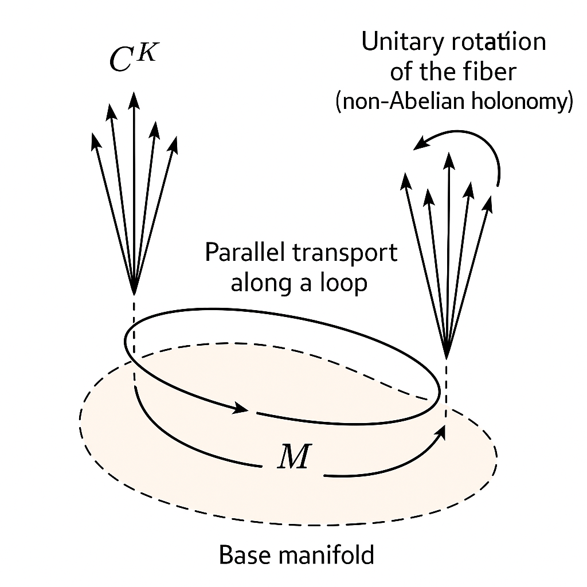
令 \(\lambda = (\lambda^1,\dots,\lambda^d)\) 為 \(d\)-維參數向量。對退化子空間的基底 \(\{|n_a(\lambda)\rangle\}\)，定義 非阿貝爾 Berry 聯絡矩陣： \[ \big[A_\mu(\lambda)\big]_{ab} = i \left\langle n_a(\lambda) \middle| \frac{\partial}{\partial \lambda^\mu} n_b(\lambda) \right\rangle,\quad \mu = 1,\dots,d. \] 將之寫成一個 \(K\times K\) 的矩陣值 1-形式： \[ \mathcal{A}(\lambda) = \sum_{\mu=1}^d A_\mu(\lambda) \, d\lambda^\mu. \]
若參數沿著路徑 \(\lambda(t)\) 演化，其時間演化在退化子空間上的投影滿足絕熱演化方程： \[ i \hbar \frac{d}{dt} \mathbf{c}(t) = \left( E_D(\lambda(t)) I_K - \hbar\, \dot{\lambda}^\mu(t) A_\mu(\lambda(t)) \right) \mathbf{c}(t), \] 其中 \(\mathbf{c}(t) = (c_1(t),\dots,c_K(t))^T\)。將動力相提出，剩餘的幾何演化由路徑有序指數決定： \[ U(C) = \mathcal{P} \exp\left( -\oint_C A_\mu(\lambda)\, d\lambda^\mu \right). \] 在此 \(\mathcal{P}\) 表示 path-ordering，因為不同點的 \(A_\mu(\lambda)\) 一般不對易。
退化子空間的基底選擇有任意性，對每個 \(\lambda\) 可進行局域 \(U(K)\) 旋轉： \[ |n_a(\lambda)\rangle \;\mapsto\; |n'_a(\lambda)\rangle = \sum_{b=1}^K \big[W(\lambda)\big]_{ba} |n_b(\lambda)\rangle, \quad W(\lambda)\in U(K). \] 在此 gauge 轉換下，聯絡變換為： \[ A_\mu(\lambda) \;\mapsto\; A'_\mu(\lambda) = W(\lambda) A_\mu(\lambda) W^\dagger(\lambda) - i \big( \partial_\mu W(\lambda) \big) W^\dagger(\lambda). \] 曲率（field strength）定義為： \[ F_{\mu\nu}(\lambda) = \partial_\mu A_\nu(\lambda) - \partial_\nu A_\mu(\lambda) - i [A_\mu(\lambda), A_\nu(\lambda)], \] 在 gauge 轉換下滿足 \[ F_{\mu\nu}(\lambda) \;\mapsto\; F'_{\mu\nu}(\lambda) = W(\lambda) F_{\mu\nu}(\lambda) W^\dagger(\lambda). \] 因此，曲率譜（例如跡）會對應幾何與拓樸不變量，是 gauge 不變的物理量。
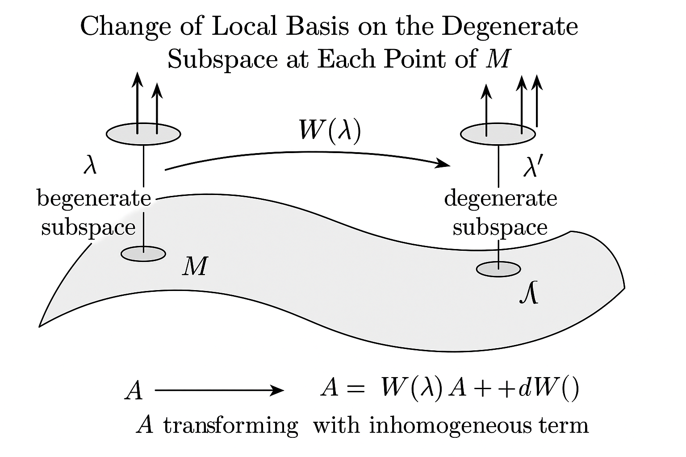
對一條封閉路徑 \(C\) 的 holonomy： \[ U(C) = \mathcal{P}\exp\left(-\oint_C \mathcal{A}\right) = \mathcal{P}\exp\left(-\oint_C A_\mu(\lambda)\, d\lambda^\mu \right) \in U(K), \] 在 gauge 轉換下滿足 \[ U(C) \;\mapsto\; U'(C) = W(\lambda(0))\, U(C)\, W^\dagger(\lambda(0)), \] 因此在固定起點的同調類中，holonomy 的共軛類是 gauge 不變的。trace： \[ \text{Tr}[U(C)] \] 則完全 gauge 不變，與 Wilson loop 的概念相同。
在 Holonomic Quantum Computation 中，我們將 邏輯量子位 編碼在退化子空間中，並使用不同的閉合路徑 \(C\) 來實現不同的單位演化矩陣 \(U(C)\)，即量子閘。
假設我們有一個物理 Hilbert 空間 \(\mathcal{H}_{\text{phys}}\)，其中存在一組參數化的哈密頓量 \(H(\lambda)\)。我們選擇一個 固定維度的退化本徵空間 \(\mathcal{H}_D(\lambda)\) 作為 邏輯編碼空間： \[ \mathcal{H}_{\text{logic}} \cong \mathcal{H}_D(\lambda),\quad \dim \mathcal{H}_{\text{logic}} = K = 2^n, \] 例如可以讓 \(K = 2\) 對應單一邏輯量子位，\(K=4\) 對應兩個量子位等。
關鍵要求：
設 \(G\subset U(K)\) 為由所有可實現 holonomy \(U(C)\) 生成的群： \[ G = \big\langle \, U(C)\,\big|\, C \text{ 為可實現的閉合路徑}\, \big\rangle \subseteq U(K). \] 若 \(G\) 的 Lie 代數（封閉於交換子的線性空間）與 \(\mathfrak{su}(K)\)（或至少包含一組可生成 \(\mathfrak{su}(K)\) 的子集）同構，則此系統可實現任意的 \(SU(K)\) 單位操作，即對 \(\log_2 K\) 個邏輯量子位而言是 通用的。
更形式化地說，令可達的聯絡方向集合為 \[ \mathcal{S} = \{ A_\mu(\lambda) \mid \lambda\in\mathcal{M},\ \mu=1,\dots,d\}, \] 則由 \(\mathcal{S}\) 及其交換子反覆生成的 Lie 代數 \[ \mathfrak{g} = \mathrm{Lie}\big(\mathcal{S}\big) \] 若滿足 \[ \mathfrak{g} \supseteq \mathfrak{su}(K), \] 則 holonomy 群 \(G\) 是（至少在連通部分上）等同於或者包含 \(SU(K)\)，從而具備通用性。
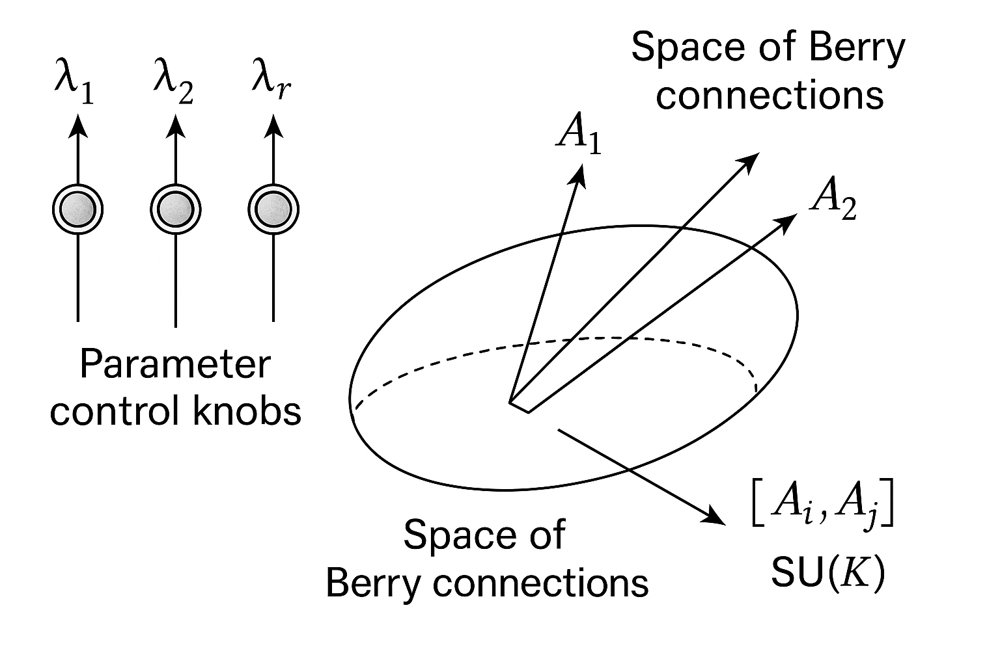
由於我們希望邏輯閘完全幾何化，通常會設計使得退化能階的本徵值 \(E_D(\lambda)\) 在整個路徑上為固定常數（甚至為零）： \[ E_D(\lambda) = E_0,\ \ \forall \lambda\in\mathcal{M}. \] 則動力相只是一個全局相位 \(e^{-iE_0 T/\hbar}\)，對邏輯運算無物理影響，可忽略。
另一種方法是採用 spin echo 或將演化分為兩段對稱路徑，使動力相對消，只保留幾何相。對於 Holonomic gate，純幾何的構造通常被認為對某些誤差（例如哈密頓量小幅擾動）比較「幾何穩健」，這也是幾何量子計算的一大動機。
考慮一個具有三個能階的系統 \(\{|0\rangle, |1\rangle, |e\rangle\}\)，其中 \(|0\rangle, |1\rangle\) 為邏輯態，\(|e\rangle\) 為輔助激發態。透過外部控制場（例如雷射），令 \(|0\rangle\) 與 \(|e\rangle\) 以及 \(|1\rangle\) 與 \(|e\rangle\) 之間發生受控耦合： \[ H(\lambda) = \hbar \left( \Omega_0(\lambda) |e\rangle\langle 0| + \Omega_1(\lambda) |e\rangle\langle 1| + \text{h.c.} \right), \] 其中 \(\lambda\) 代表兩個控制雷射的振幅與相位等參數。
定義參數化： \[ \Omega_0(\lambda) = \Omega \cos\frac{\theta}{2},\quad \Omega_1(\lambda) = \Omega e^{i\phi} \sin\frac{\theta}{2}, \] 參數空間由 \((\theta,\phi)\) 張成，類似 Bloch 球座標。
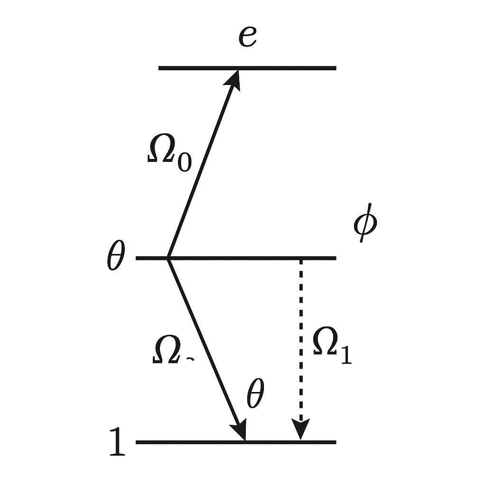
, |1> and excited state |e>, showing two laser couplings with Rabi frequencies Ω0 and Ω1, parameterized by θ and φ.">在上述耦合下，可以構造：
若我們將邏輯子空間定義為 \(\mathcal{H}_D(\lambda) = \text{span}\{|d(\theta,\phi)\rangle\}\)（單維），則幾何相是 Abelian 的 Berry phase，不足以構成非阿貝爾 holonomy。然而，若擴展到更高維退化空間（例如雙 Lambda 或四能階模型），就能實現非阿貝爾結構。
儘管此三能階例子只有一維暗態子空間，它仍可作為引導我們理解幾何設計與基底變化的直覺模型。
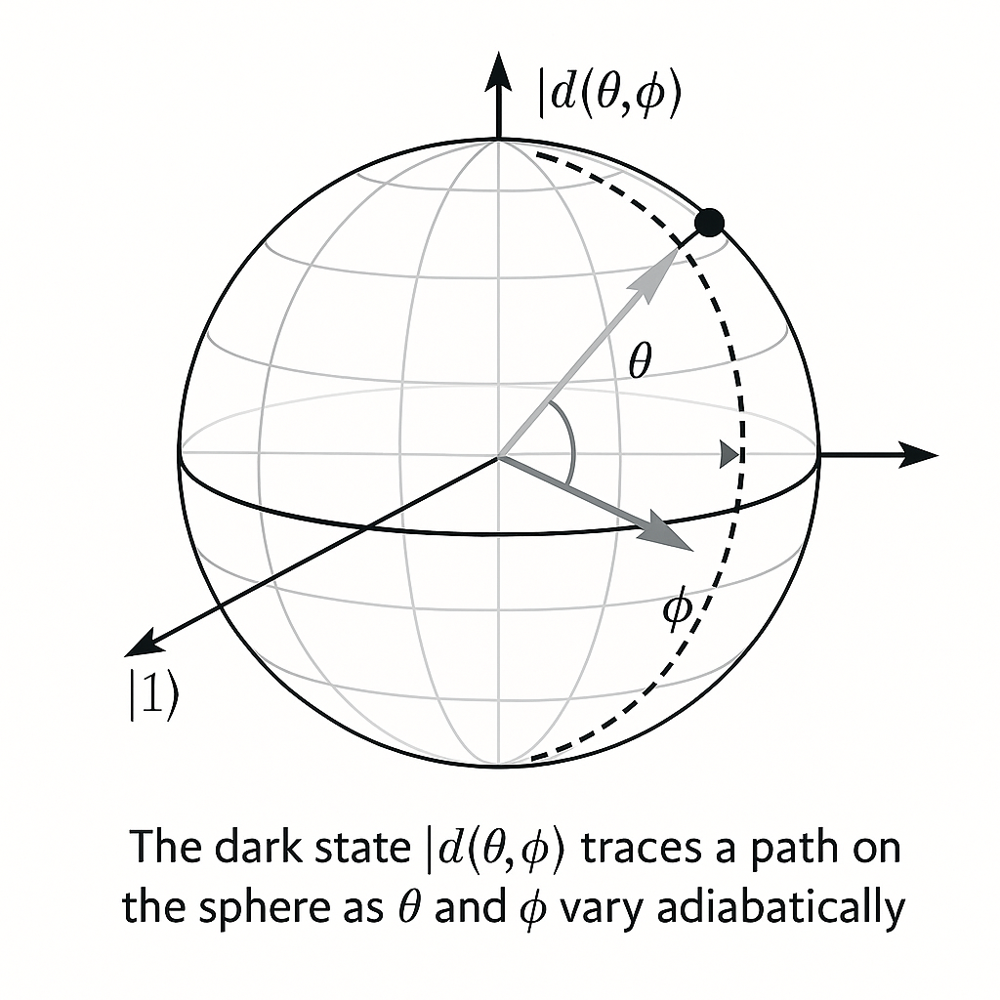
and |1> define the poles, and the dark state |d(θ,φ)> traces a path on the sphere as θ and φ vary adiabatically.">對暗態 \( |d(\theta,\phi)\rangle \)，其 Berry 聯絡為標量： \[ A_\mu(\lambda) = i \langle d(\theta,\phi) | \partial_\mu d(\theta,\phi)\rangle,\quad \mu=\theta,\phi. \] 可計算得： \[ A_\theta = i \langle d | \partial_\theta d \rangle = 0, \] \[ A_\phi = i \langle d | \partial_\phi d \rangle = \frac{1}{2} \big(1-\cos\theta\big). \] 因此，在參數空間上的閉合路徑 \(C\) 所產生的幾何相為： \[ \gamma_d(C) = \oint_C A_\phi\, d\phi = \frac{1}{2} \oint_C \big(1-\cos\theta\big)\, d\phi = \frac{1}{2} \Omega_S(C), \] 其中 \(\Omega_S(C)\) 為路徑 \(C\) 在 Bloch 球上所包圍的立體角。這與標準的 Berry phase 幾何解釋一致。
此例顯示幾何相可以僅由軌跡在參數空間中的「幾何圖形」（立體角）所決定，而與時間歷程等細節無關，顯示出幾何穩健性。
要實現非阿貝爾 Berry 相，我們需要一個 維度 \(K\ge 2\) 的退化子空間。考慮由兩個 Lambda 結構所組成的四能階模型，或等效地，一個四能階系統： \[ \{|0\rangle, |1\rangle, |a\rangle, |b\rangle\}, \] 其中 \(|0\rangle, |1\rangle\) 作為邏輯量子位基底，\(|a\rangle,|b\rangle\) 為輔助態。在適當耦合設計下，可以構造一個 二維「dark subspace」 作為邏輯空間。
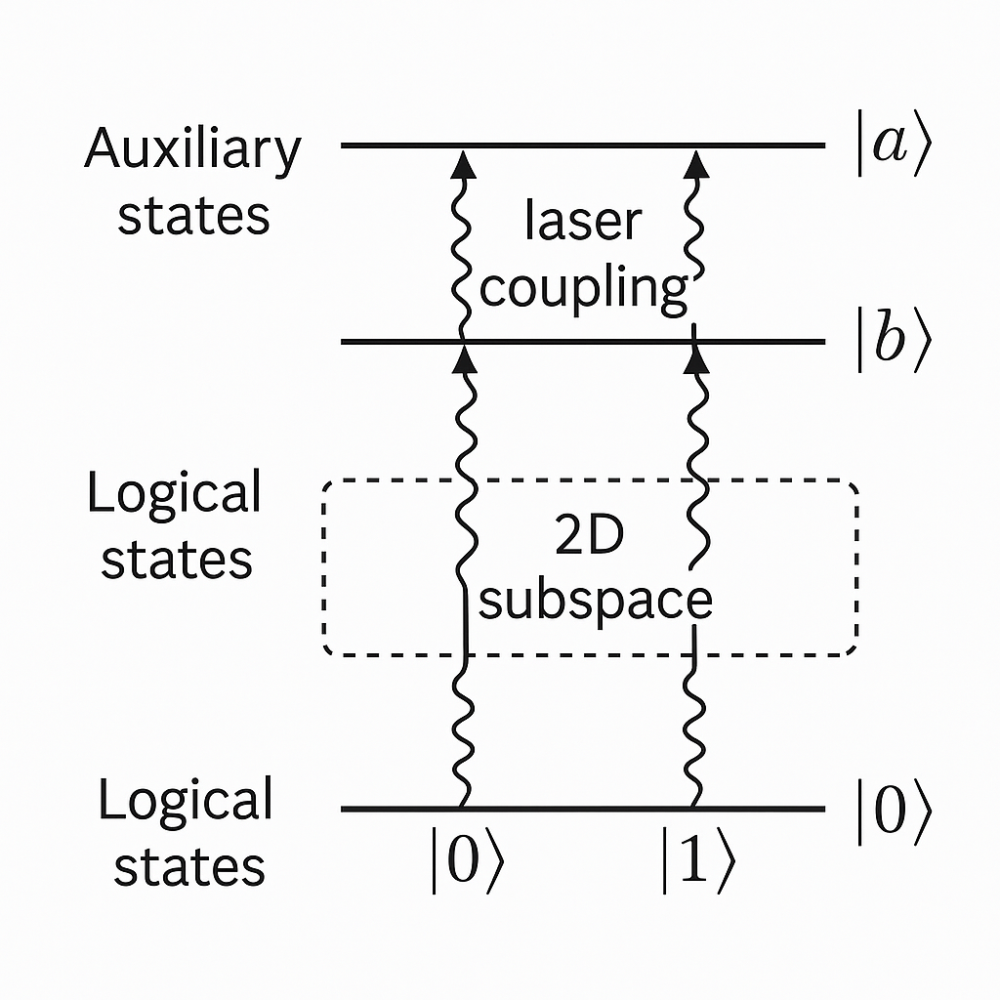
, |1> and auxiliary states |a>, |b>, showing multiple laser couplings designed such that two degenerate dark states exist and form a 2D subspace.">具體上，考慮一個哈密頓量： \[ H(\lambda) = \hbar\left( \sum_{j=0,1} \Omega_{ja}(\lambda) |a\rangle\langle j| + \sum_{j=0,1} \Omega_{jb}(\lambda) |b\rangle\langle j| + \text{h.c.} \right), \] 並選擇 \(\Omega_{ja}(\lambda)\), \(\Omega_{jb}(\lambda)\) 使得存在兩個獨立的線性組合 \(|D_1(\lambda)\rangle, |D_2(\lambda)\rangle\)，滿足 \[ H(\lambda) |D_\alpha(\lambda)\rangle = 0,\quad \alpha=1,2. \] 則 \(\mathcal{H}_D(\lambda) = \text{span}\{|D_1(\lambda)\rangle, |D_2(\lambda)\rangle\}\) 構成二維退化子空間，可被用作邏輯量子位空間： \[ |0_L\rangle := |D_1(\lambda_0)\rangle,\quad |1_L\rangle := |D_2(\lambda_0)\rangle, \] 在某個參考點 \(\lambda_0\) 上作為定義。
在 \(\{|D_1(\lambda)\rangle, |D_2(\lambda)\rangle\}\) 基底下，Berry 聯絡為 \(2\times 2\) 矩陣： \[ \big[A_\mu(\lambda)\big]_{\alpha\beta} = i \langle D_\alpha(\lambda) | \partial_\mu D_\beta(\lambda)\rangle, \quad \alpha,\beta = 1,2. \] 若我們能將 \(|D_1(\lambda)\rangle, |D_2(\lambda)\rangle\) 寫成 Bloch 球上的某種參數化： \[ |D_1(\lambda)\rangle = \cos\frac{\Theta(\lambda)}{2} |0_L\rangle + e^{i\Phi(\lambda)} \sin\frac{\Theta(\lambda)}{2} |1_L\rangle, \] \[ |D_2(\lambda)\rangle = -\sin\frac{\Theta(\lambda)}{2} |0_L\rangle + e^{i\Phi(\lambda)}\cos\frac{\Theta(\lambda)}{2} |1_L\rangle, \] 則聯絡 \(A_\mu(\lambda)\) 通常可以寫成 Pauli 矩陣的線性組合： \[ A_\mu(\lambda) = a_\mu^0(\lambda)\, I_2 + \vec{a}_\mu(\lambda)\cdot\vec{\sigma}. \] 其中 \(\vec{\sigma}=(\sigma_x,\sigma_y,\sigma_z)\)。因為全局相對邏輯演化無效，我們可忽略 \(a_\mu^0 I_2\) 項，只關心 \(\vec{a}_\mu\cdot\vec{\sigma}\)。
若能透過參數控制使 \(\vec{a}_\mu(\lambda)\) 在不同方向變化，我們就能透過不同封閉路徑 \(C\) 產生不對易的 holonomy： \[ U(C_1) = \mathcal{P}\exp\left(-\oint_{C_1} \vec{a}_\mu\cdot\vec{\sigma}\ d\lambda^\mu\right), \quad U(C_2) = \mathcal{P}\exp\left(-\oint_{C_2} \vec{a}_\mu\cdot\vec{\sigma}\ d\lambda^\mu\right), \] 使得 \([U(C_1), U(C_2)]\neq 0\)，形成非阿貝爾結構，進而可合成任意 \(SU(2)\) 單量子位閘。
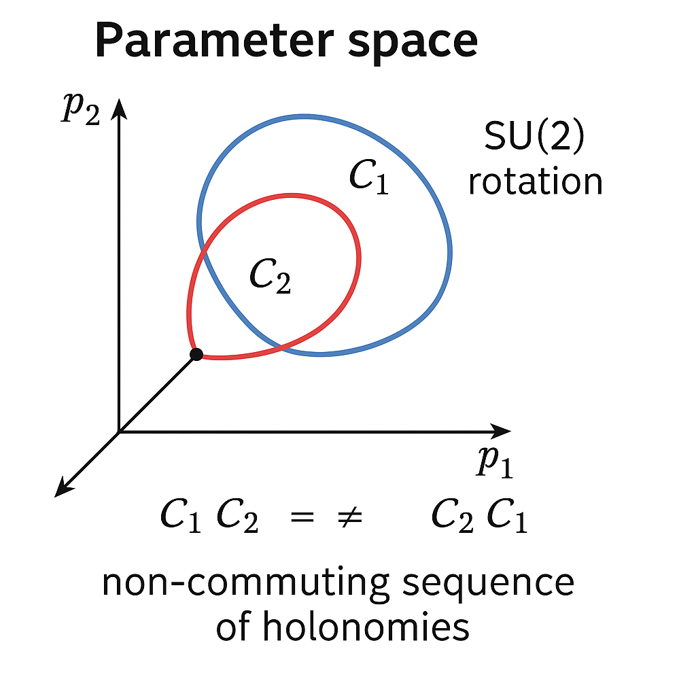
為了示意，假設在某個簡化模型下，可以將聯絡在一個 2D 控制平面 \((\lambda^1,\lambda^2)\) 上近似寫成： \[ A_1(\lambda) \approx \alpha\, \sigma_x,\quad A_2(\lambda) \approx \beta\, \sigma_z, \] 其中 \(\alpha,\beta\) 近似為常數（取決於具體設計）。考慮矩形路徑：
若忽略 path ordering 的細節（或聯絡近似常數），holonomy 近似為： \[ U(C) \approx e^{-\int_1 A_1 d\lambda^1} e^{-\int_2 A_2 d\lambda^2} e^{+\int_3 A_1 d\lambda^1} e^{+\int_4 A_2 d\lambda^2} = e^{-\alpha L_1 \sigma_x} e^{-\beta L_2 \sigma_z} e^{+\alpha L_1 \sigma_x} e^{+\beta L_2 \sigma_z}. \] 利用 Baker–Campbell–Hausdorff 公式，可得： \[ U(C) \approx \exp\left( -[\alpha L_1 \sigma_x,\ \beta L_2 \sigma_z] + \dots \right) = \exp\left( -2i\alpha\beta L_1 L_2 \sigma_y + \dots \right), \] 忽略更高階項，這等價於繞 \(y\) 軸的一次旋轉： \[ U(C) \approx e^{-i \theta_{\text{eff}} \sigma_y},\quad \theta_{\text{eff}} = 2\alpha\beta L_1 L_2. \]
控制矩形大小 \(L_1, L_2\) 便可得到不同角度的旋轉。再搭配其他路徑產生的 \(x\) 軸或 \(z\) 軸旋轉即可生成任意 \(SU(2)\) 單位閘。
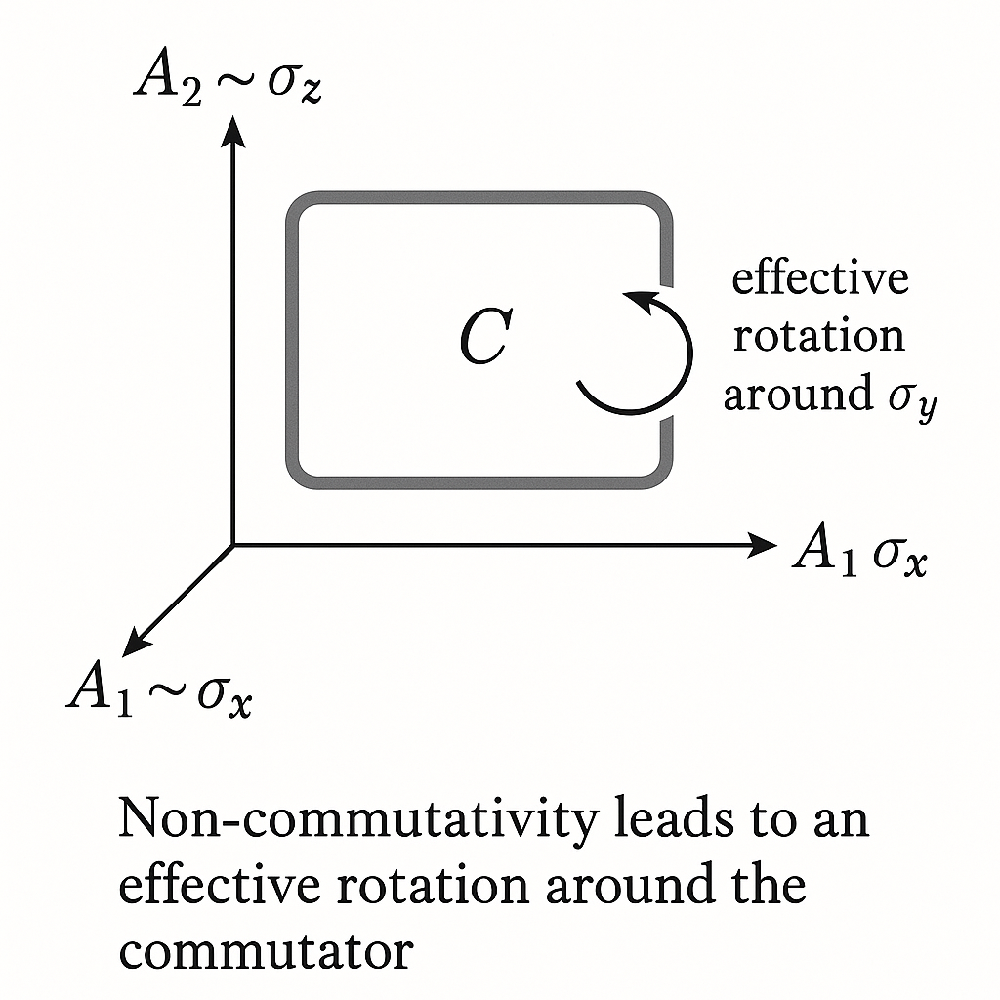
要實現通用量子計算，我們需要：
假設我們將兩個邏輯量子位編碼在一個 \(K=4\) 維退化子空間 \(\mathcal{H}_D(\lambda)\) 中，具基底 \[ \big\{ |00_L(\lambda)\rangle, |01_L(\lambda)\rangle, |10_L(\lambda)\rangle, |11_L(\lambda)\rangle \big\}, \] 這些態隨 \(\lambda\) 變化而形成一個四維向量叢。Berry 聯絡為 \(4\times4\) 矩陣： \[ \big[A_\mu(\lambda)\big]_{ij} = i\left\langle i_L(\lambda) \middle| \partial_\mu j_L(\lambda) \right\rangle, \quad i,j\in\{00,01,10,11\}. \]
欲構造 entangling gate（例如 controlled-phase），需有路徑 \(C\) 使得 holonomy \[ U(C) \neq U_1\otimes U_2, \] 而是產生邏輯量子位間的糾纏。例如希望達到： \[ U_{\text{CZ}} = \mathrm{diag}(1,1,1,-1) \] （在 \(|00\rangle,|01\rangle,|10\rangle,|11\rangle\) 基底下）。對應的 Berry 聯絡在 \(|11_L\rangle\) 態上與其他態有不同的「幾何耦合」，使得 \(|11_L\rangle\) 在繞行路徑後較其他態多獲得一個 \(\pi\) 的幾何相位（或等價於在子空間 \(\text{span}\{|00_L\rangle,|01_L\rangle,|10_L\rangle\}\) 上為單位，而在 \(|11_L\rangle\) 上作用為 -1）。
更抽象地，令 \(A_\mu(\lambda)\) 在某一控制區域可近似為： \[ A_\mu(\lambda) \approx \alpha_\mu(\lambda) I_4 + \sum_{k=1}^3 \big( b^k_\mu(\lambda)\, \sigma_k\otimes I + c^k_\mu(\lambda)\, I\otimes \sigma_k \big) + \sum_{k,l=1}^3 d^{kl}_\mu(\lambda)\, \sigma_k\otimes\sigma_l. \] 如果存在某路徑 \(C\) 使得 \[ \int_C d^{kl}_\mu(\lambda)\, d\lambda^\mu \neq 0 \] 對某些 \(k,l\) 成立，那麼 holonomy 中將自然出現 entangling 結構。例如 \(\sigma_z\otimes\sigma_z\) 的幾何貢獻可以生成受控相位： \[ U(C) \sim \exp\left( -i \theta_{zz}\, \sigma_z\otimes\sigma_z \right), \] 適當選擇 \(\theta_{zz} = \pi/4\) 等，即可得到 CZ 或 CNOT 類閘。
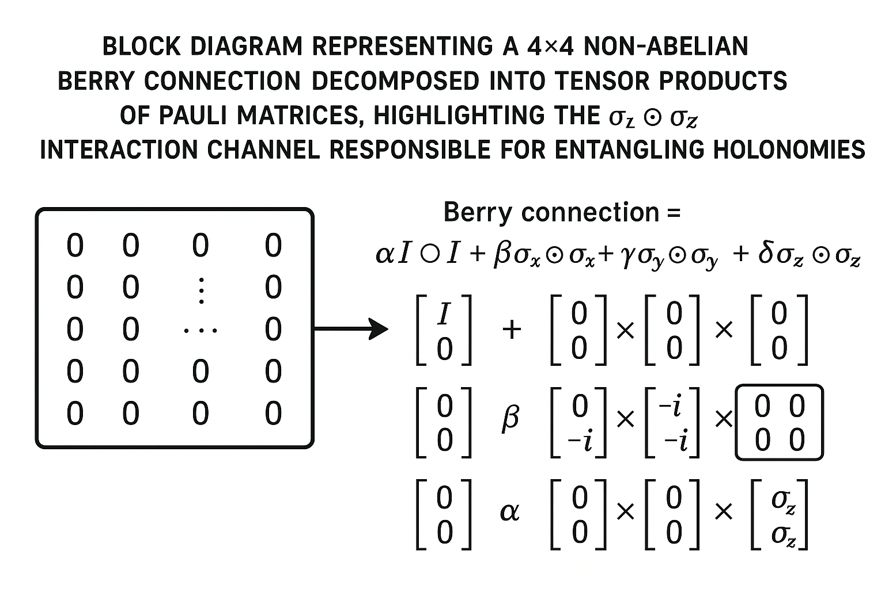
若已可透過不同路徑 \(C_x, C_z\) 在單量子位上實現 \(e^{-i\theta_x \sigma_x}\)、\(e^{-i\theta_z \sigma_z}\)，並透過某 entangling loop \(C_{zz}\) 實現： \[ U(C_{zz}) = e^{-i\theta_{zz}\, \sigma_z\otimes\sigma_z}, \] 則根據量子門通用性定理，可生成任意 \(SU(4)\) 上的單位演化（密集地逼近）。因為 \(\sigma_x, \sigma_z\) 生成 \(\mathfrak{su}(2)\)（單量子位），而加入 \(\sigma_z\otimes\sigma_z\) 的雙量子位互動，即可產生一組生成整個 \(\mathfrak{su}(4)\) 的 Lie 代數基。
因此，Holonomic gate 的設計關鍵其實是：
由於 holonomy（幾何相）只依賴於路徑在參數空間中的「幾何形狀」，而非隨時間的詳細參數變化，因此對「時間 reparameterization」類的雜訊具有天然免疫力。例如：
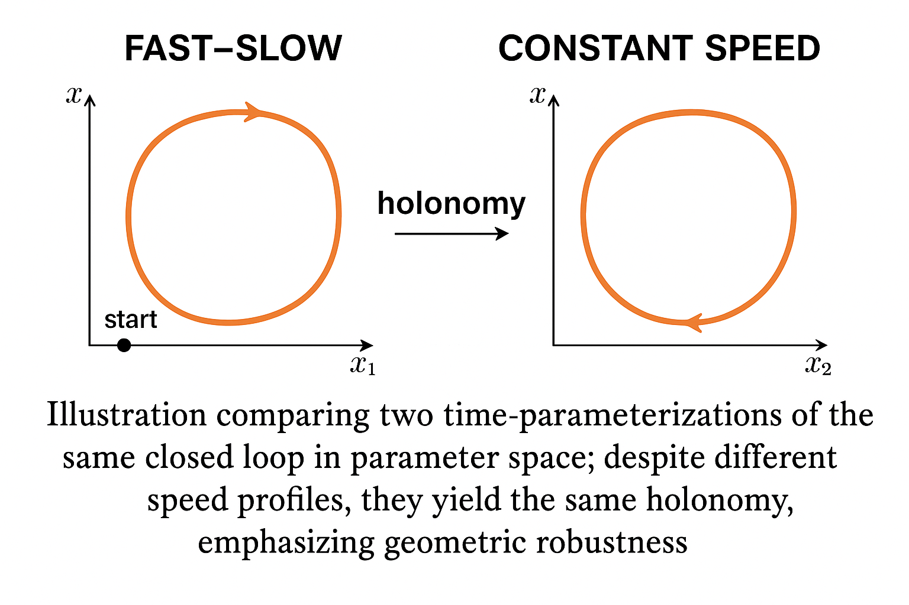
另一方面，為確保絕熱條件，演化速度不能太快。對能隙 \(\Delta\) 與最大耦合 \(\|\partial_t H\|\) 而言，絕熱誤差一般滿足類似估計： \[ \epsilon_{\text{ad}} \sim \mathcal{O}\left( \frac{\max_t \|\dot{H}(t)\|}{\Delta^2} \right). \] 因此，若要同時達到幾何穩健與容錯，需在「演化時間」與「能隙大小」之間取得折衷。過慢的絕熱演化也會面臨去相干效應的威脅。
近年來亦有發展所謂 non-adiabatic holonomic quantum computation，試圖在有限時間脈衝下實現幾何 holonomy，而不嚴格依賴絕熱條件。這需要在時間依賴的哈密頓量與演化路徑設計上引入更精密的控制，使得演化依然只與「路徑幾何」相關，而非演化速率。這將在後續講次或進階章節中另行說明。
在下一講中，我們將進一步探討 Holonomic Quantum Computation 與 Quantum Annealing 的結合，即 Holonomic Quantum Annealing，並分析其在最佳化問題與能量地景中的優勢與挑戰。